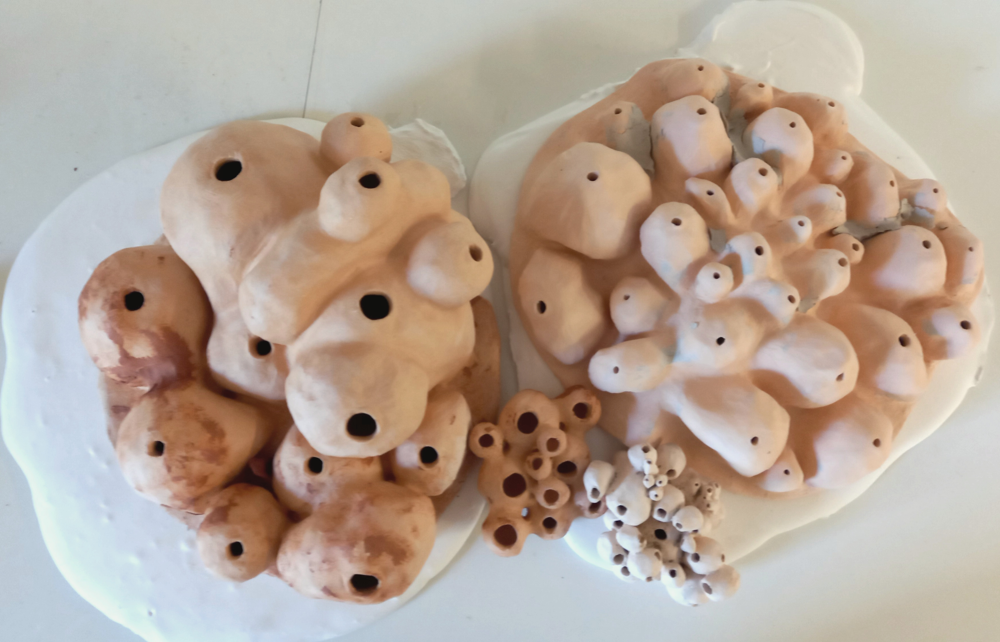
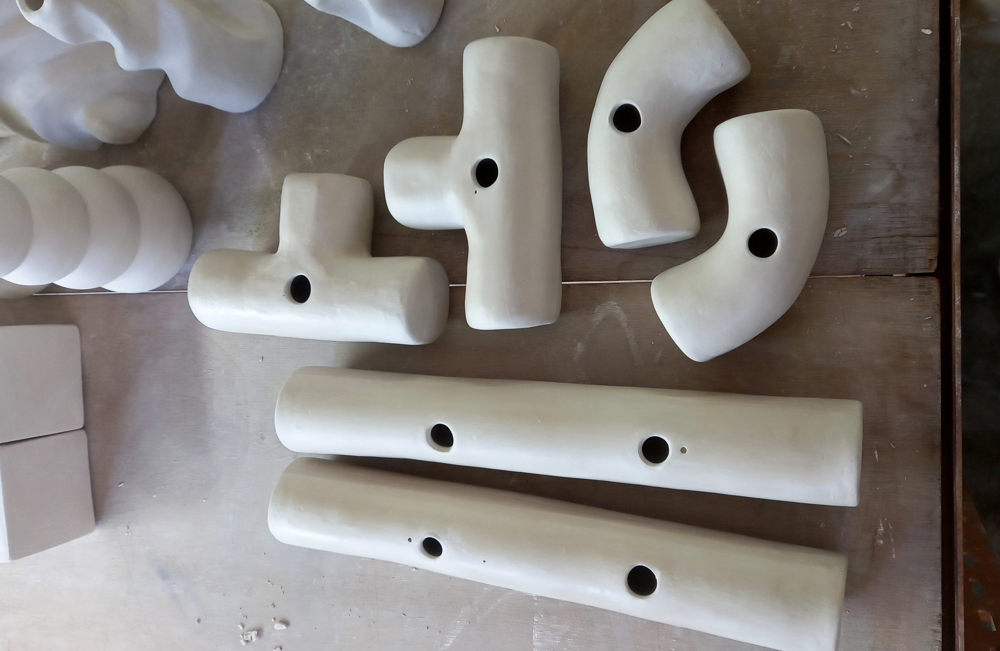
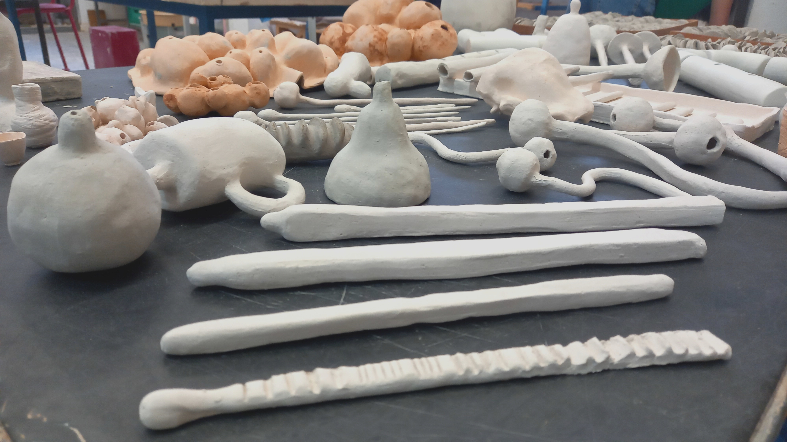
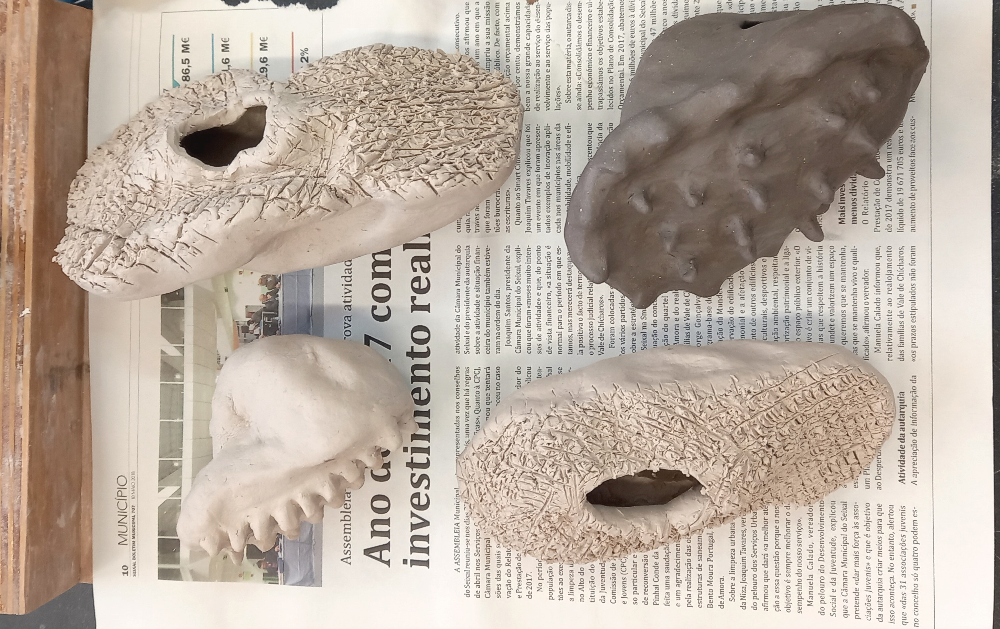
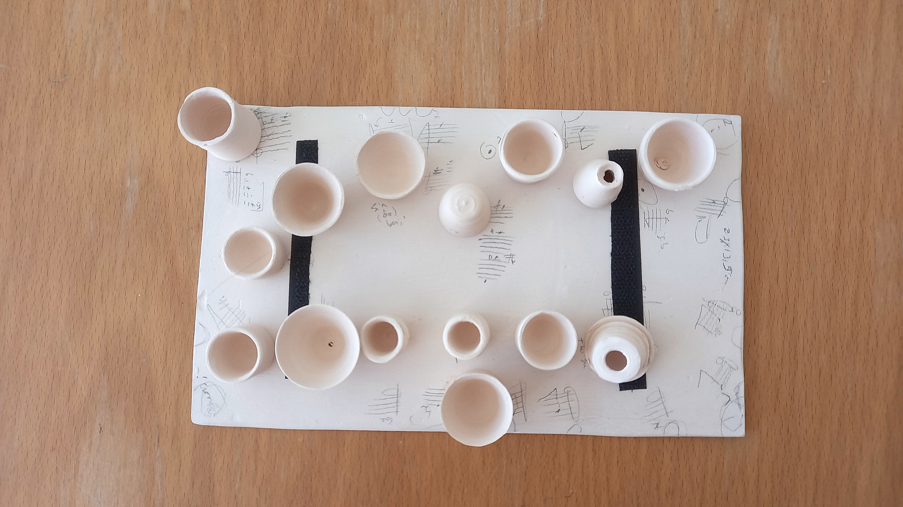
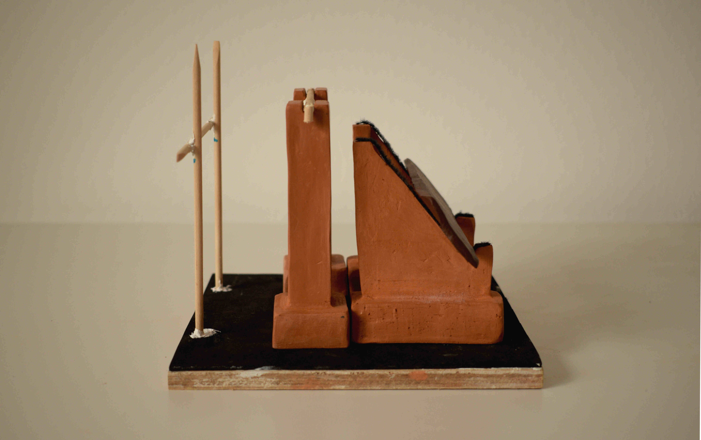
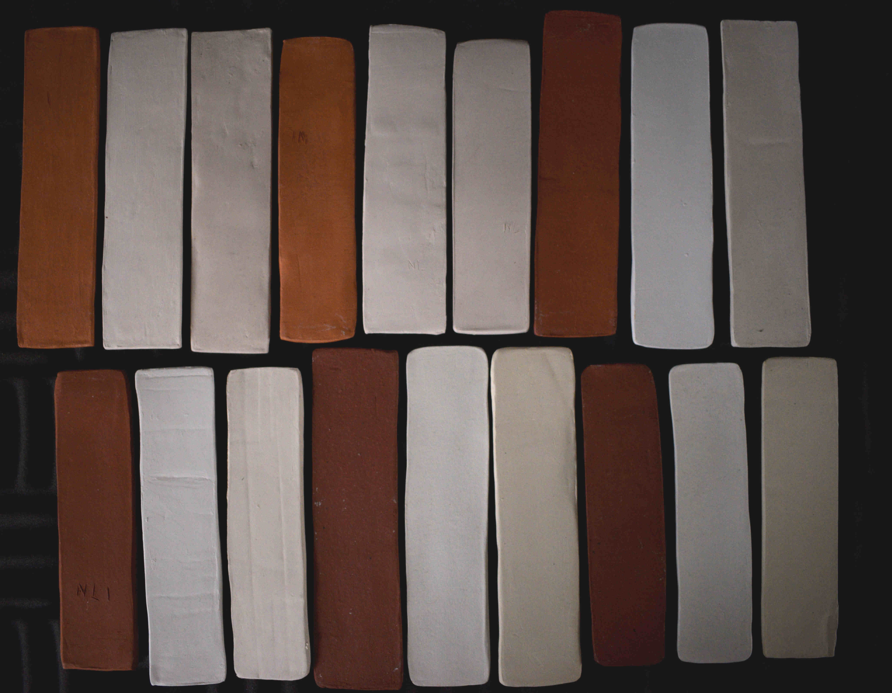
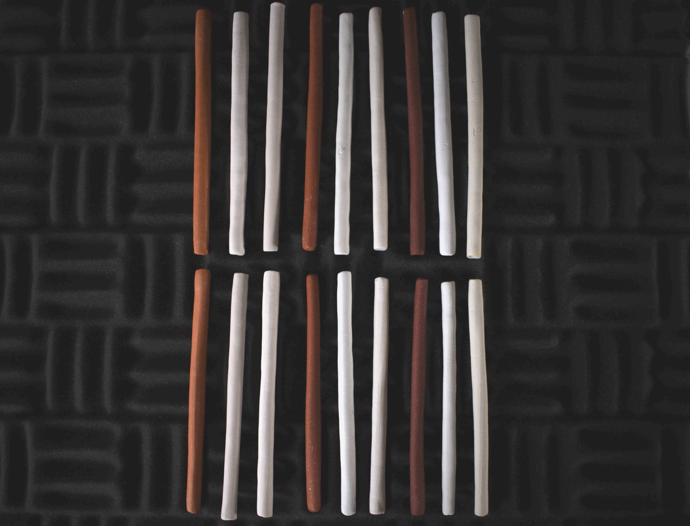

T.Z.U.L explores ceramics and their behavior in relation to sound. The nature of ceramic materials, as well as the objects that emerge from their interaction with humans, is full of details. These details can be perceived directly or subtly as sound and
sonic features. The_PBO interacts with ceramics and their different stages after sintering and experiences sound phenomena to an extent that can lead to a technical approach, a performative action or a register that is understood as
witnessing a particular phenomenon. The output usually refers to hybrid catalogs, diaries and performative research such as live actions, ASMR moments (online or not) or workshops.
Sound Sculpture

Aerophones
Blowing layout understood as body motion

Casting "MECANO" aerophone structures
Lego Logics for wind instruments building

Bisqued experimental headphones
Low-key | Low-tech sound-devices created to be exhibited in a library

Ceramic Violins
Friction instruments formulas based on simple shapes

Pendulum: Red Clay structure
Activation device to test samples

Friction Devices
Formant based instrument to scratch surfaces

3 Types of Clay Rods Fired at Different Temperatures
Scientific experience for STGC III, MACVC Vicarte, Caparica 2022

Linear contraction and water absorption tests
STGC III, MACVC Vicarte, Caparica 2022
3 types of clay Slabs/beams fired at different temperatures